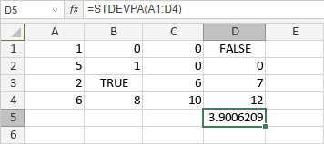

STDEVPA funkcija
STDEVPA funkcija je jedna od statističkih funkcija. Koristi se za analizu opsega podataka i vraća standardnu devijaciju cele populacije.
Sintaksa
STDEVPA(value1, [value2], ...)
STDEVPA funkcija ima sledeće argumente:
| Argument | Opis |
|---|---|
| value1/2/n | Do 255 vrednosti za koje želite da izračunate standardnu devijaciju. |
Napomene
Tekstualne vrednosti i FALSE se računaju kao 0, TRUE se računa kao 1, prazne ćelije se ignorišu.
Kako primeniti STDEVPA funkciju.
Primeri
Slika ispod prikazuje rezultat koji vraća STDEVPA funkcija.
